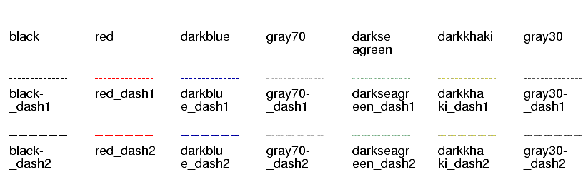

| PyChart |
| PyChart |
Defines the style of the tip of the line segment. 0: butt cap (square cutoff, with no projection beyond), 1: round cap (arc), 2: projecting square cap (square cutoff, but the line extends half the line width). See also Postscript/PDF reference manual.
The color of the line.
The value of None will draw a solid line. Otherwise, this attribute specifies the style of dashed lines. The 2N'th value specifies the length of the line (in points), and 2N+1'th value specifies the length of the blank.
For example, the dash style of (3,2,4,1) draws a dashed line that
looks like ---__----_---__----_....
Join style. 0: Miter join (sharp, pointed corners), 1: round join (rounded corners), 2: bevel join (flattened corners). See also Postscript/PDF reference manual.
Width of the line, in points.
The below picture show standard line styles.
These styles are referred to by names
line_style.name, where name is the label below each item.

| PyChart |